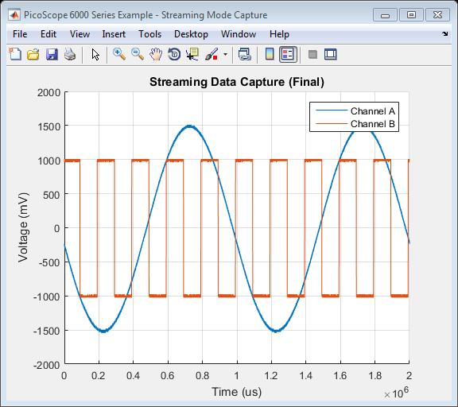

PicoScope 6000 Series Instrument Driver Oscilloscope Streaming Data Capture Example
This is an example of an instrument control session using a device object. The instrument control session comprises all the steps you are likely to take when communicating with your instrument.
These steps are:
- Create a device object
- Connect to the instrument
- Configure properties
- Invoke functions
- Disconnect from the instrument
To run the instrument control session, type the name of the file, PS6000_ID_Streaming_Example, at the MATLAB command prompt.
The file, PS6000_ID_STREAMING_EXAMPLE.M must be on your MATLAB PATH. For additional information on setting your MATLAB PATH, type 'help addpath' at the MATLAB command prompt.
Example: PS6000_ID_Streaming_Example;
Description: Demonstrates how to call set properties and call functions in order to capture data in streaming mode data from a PicoScope 6000 Series Oscilloscope.
Note: Not all device and group object functions used in this example are compatible with the Test and Measurement Tool.
Copyright: © 2014 - 2015 Pico Technology Ltd. All rights reserved.
Contents
- Suggested Input Test Signals
- Clear Command Window and Close any Figures
- Load Configuration Information
- Parameter Definitions
- Device Connection
- Display Unit Information
- Channel Setup
- Trigger Setup
- Set Data Buffers
- Start Streaming And Collect Data
- Stop the Device
- Find the Number of Samples.
- Process Data
- DISCONNECT DEVICE
Suggested Input Test Signals
This example was published using the following test signals:
- Channel A: 3Vpp, 1Hz sine wave
- Channel B: 2Vpp, 5Hz square wave
Clear Command Window and Close any Figures
clc;
close all;
Load Configuration Information
PS6000Config;
Parameter Definitions
Define any parameters that might be required throughout the script.
channelA = ps6000Enuminfo.enPS6000Channel.PS6000_CHANNEL_A; channelB = ps6000Enuminfo.enPS6000Channel.PS6000_CHANNEL_B;
Device Connection
% Create device - specify serial number if required % Specify serial number as 2nd argument if required. ps6000DeviceObj = icdevice('picotech_ps6000_generic', ''); % Connect device connect(ps6000DeviceObj);
Copyright © 2014 - 2015 Pico Technology Ltd. All rights reserved.
PicoScope 6000 Series MATLAB Instrument Driver
Warning: No units found.
Opening PicoScope 6000 Series device...
Instrument Device Object Using Driver : picotech_ps6000_generic.mdd
Instrument Information
Type: Oscilloscope
Manufacturer: Pico Technology Ltd.
Model: PicoScope 6000 Series
Driver Information
DriverType: MATLAB generic
DriverName: picotech_ps6000_generic.mdd
DriverVersion: 1.2.10
Communication State
Status: open
Setting Device Parameters...
Default Channel Setup:-
-----------------------
ChannelA:-
Enabled: True
Coupling: DC
Range:5V
Analogue Offset: 0.0V
Bandwidth: Full
ChannelB:-
Enabled: True
Coupling: DC
Range:5V
Analogue Offset: 0.0V
Bandwidth: Full
ChannelC:-
Enabled: True
Coupling: DC
Range:5V
Analogue Offset: 0.0V
Bandwidth: Full
ChannelD:-
Enabled: True
Coupling: DC
Range:5V
Analogue Offset: 0.0V
Bandwidth: Full
Turning off Equivalent Time Sampling...
Turning off trigger...
Default Block mode parameters:-
Timebase index : 161
Time Interval: 1004.8 ns
Number of pre-trigger samples: 0
Number of post-trigger samples: 1000000
Total number of samples: 1000000
Default Streaming mode parameters:-
Streaming interval: 1.00e-06 s
Streaming auto stop: 1
Default Signal generator parameters:-
Start frequency: 1000 Hz
Stop frequency: 1000 Hz
Offset voltage: 0 mV
Peak to Peak voltage: 2000 mV
Initialisation complete.
Connected to PicoScope 6000 Series device:-
Instrument Model: 6404D
Batch/Serial Number: CQ186/036
Analogue Channels: 4
Bandwidth: 500 MHz
Buffer memory: 2048 MS
Maximum sampling rate: 5 GS/s
Signal Generator Type: Arbitrary Waveform Generator
Display Unit Information
[infoStatus, unitInfo] = invoke(ps6000DeviceObj, 'getUnitInfo');
disp(unitInfo);
'Driver version: 1.4.5.30'
'USB version: 3.0'
'Hardware version: 1 1'
'Variant: 6404D'
'Batch & Serial: CQ186/036'
'Cal. Date: 18Nov13'
'Kernel version: 1.2'
'Digital HW version: 1'
'Analogue HW version: 1'
'Firmware 1: 1.4.0.0'
'Firmware 2: 1.1.39.0'
Channel Setup
All channels are enabled by default - switch off all except Channels A and B. Channel settings are changed as shown below:
% Channel A channelSettings(1).enabled = PicoConstants.TRUE; channelSettings(1).coupling = ps6000Enuminfo.enPS6000Coupling.PS6000_DC_1M; channelSettings(1).range = ps6000Enuminfo.enPS6000Range.PS6000_2V; channelSettings(1).analogueOffset = 0.0; channelSettings(1).bandwidth = ps6000Enuminfo.enPS6000BandwidthLimiter.PS6000_BW_FULL; channelARangeMV = PicoConstants.SCOPE_INPUT_RANGES(channelSettings(1).range + 1); % Channel B channelSettings(2).enabled = PicoConstants.TRUE; channelSettings(2).coupling = ps6000Enuminfo.enPS6000Coupling.PS6000_DC_1M; channelSettings(2).range = ps6000Enuminfo.enPS6000Range.PS6000_2V; channelSettings(2).analogueOffset = 0.0; channelSettings(2).bandwidth = ps6000Enuminfo.enPS6000BandwidthLimiter.PS6000_BW_FULL; channelBRangeMV = PicoConstants.SCOPE_INPUT_RANGES(channelSettings(2).range + 1); % Channel C channelSettings(3).enabled = PicoConstants.FALSE; channelSettings(3).coupling = ps6000Enuminfo.enPS6000Coupling.PS6000_DC_1M; channelSettings(3).range = ps6000Enuminfo.enPS6000Range.PS6000_2V; channelSettings(3).analogueOffset = 0.0; channelSettings(3).bandwidth = ps6000Enuminfo.enPS6000BandwidthLimiter.PS6000_BW_FULL; % Channel D channelSettings(4).enabled = PicoConstants.FALSE; channelSettings(4).coupling = ps6000Enuminfo.enPS6000Coupling.PS6000_DC_1M; channelSettings(4).range = ps6000Enuminfo.enPS6000Range.PS6000_2V; channelSettings(4).analogueOffset = 0.0; channelSettings(4).bandwidth = ps6000Enuminfo.enPS6000BandwidthLimiter.PS6000_BW_FULL; % Keep the status values returned from the driver. numChannels = get(ps6000DeviceObj, 'channelCount'); for ch = 1:numChannels status.setChannelStatus(ch) = invoke(ps6000DeviceObj, 'ps6000SetChannel', ... (ch - 1), channelSettings(ch).enabled, ... channelSettings(ch).coupling, channelSettings(ch).range, ... channelSettings(ch).analogueOffset, channelSettings(ch).bandwidth); end % Obtain the maximum Analogue Digital Converter count value from the driver % - this is used for scaling values returned from the driver when data is % collected. maxADCCount = double(get(ps6000DeviceObj, 'maxADCValue'));
Trigger Setup
Turn off the trigger.
If a trigger is set and the autoStop property in the driver is set to '1', the device will stop collecting data once the number of post trigger samples have been collected.
% Trigger properties and functions are located in the Instrument % Driver's Trigger group. triggerGroupObj = get(ps6000DeviceObj, 'Trigger'); triggerGroupObj = triggerGroupObj(1); [status.setTriggerOff] = invoke(triggerGroupObj, 'setTriggerOff');
Set Data Buffers
Data buffers for Channel A and B - buffers should be set with the driver, and these MUST be passed with application buffers to the wrapper driver. This will ensure that data is correctly copied from the driver buffers for later processing.
overviewBufferSize = 250000; % Size of the buffer(s) to collect data from the driver's buffer(s). segmentIndex = 0; ratioMode = ps6000Enuminfo.enPS6000RatioMode.PS6000_RATIO_MODE_NONE; % Buffers to be passed to the driver. pDriverBufferChA = libpointer('int16Ptr', zeros(overviewBufferSize, 1, 'int16')); pDriverBufferChB = libpointer('int16Ptr', zeros(overviewBufferSize, 1, 'int16')); status.setDataBufferChA = invoke(ps6000DeviceObj, 'ps6000SetDataBuffer', ... channelA, pDriverBufferChA, overviewBufferSize, segmentIndex, ratioMode); status.setDataBufferChB = invoke(ps6000DeviceObj, 'ps6000SetDataBuffer', ... channelB, pDriverBufferChB, overviewBufferSize, segmentIndex, ratioMode); % Application Buffers - these are for temporarily copying data from the driver. pAppBufferChA = libpointer('int16Ptr', zeros(overviewBufferSize, 1)); pAppBufferChB = libpointer('int16Ptr', zeros(overviewBufferSize, 1)); % Streaming properties and functions are located in the Instrument % Driver's Streaming group. streamingGroupObj = get(ps6000DeviceObj, 'Streaming'); streamingGroupObj = streamingGroupObj(1); % Register application buffer and driver buffers with the wrapper driver. status.setAppAndDriverBuffersA = invoke(streamingGroupObj, 'setAppAndDriverBuffers', channelA, ... pAppBufferChA, pDriverBufferChA, overviewBufferSize); status.setAppAndDriverBuffersB = invoke(streamingGroupObj, 'setAppAndDriverBuffers', channelB, ... pAppBufferChB, pDriverBufferChB, overviewBufferSize);
Start Streaming And Collect Data
Use default value for streaming interval which is 1e-6 for 1MS/s. Collect data for 1 second with auto stop - maximum array size will depend on PC's resources - type memory at the MATLAB command prompt for further information.
% To change the sample interval set the streamingInterval property of the % Streaming group object. The call to the |ps6000RunStreaming| function % will output the actual sampling interval used by the driver. % For 200kS/s, specify 5us % set(streamingGroupObj, 'streamingInterval', 5e-6); % For 10MS/s, specify 100ns % set(streamingGroupObj, 'streamingInterval', 100e-9); % Set the number of pre- and post-trigger samples. % If no trigger is set, 'numPreTriggerSamples' is ignored. set(ps6000DeviceObj, 'numPreTriggerSamples', 0); set(ps6000DeviceObj, 'numPostTriggerSamples', 2000000); % The autoStop parameter can be set to false (0) to allow for continuous % data collection. % set(streamingGroupObj, 'autoStop', PicoConstants.FALSE); % Set other streaming parameters downSampleRatio = 1; downSampleRatioMode = ps6000Enuminfo.enPS6000RatioMode.PS6000_RATIO_MODE_NONE; % Defined buffers to store data collected from the channels. If capturing % data without using the autoStop flag, or if using a trigger with the % autoStop flag, allocate sufficient space (1.5 times sum of the number of % pre-trigger and post-trigger samples is shown below) to allow for % additional pre-trigger data. Pre-allocating the array is more efficient % than using vertcat to combine data. maxSamples = get(ps6000DeviceObj, 'numPreTriggerSamples') + ... get(ps6000DeviceObj, 'numPostTriggerSamples'); % Take into account the downsampling ratio mode - required if collecting % data without a trigger and using the autoStop flag. % finalBufferLength = round(1.5 * maxSamples / downSampleRatio); pBufferChAFinal = libpointer('int16Ptr', zeros(maxSamples, 1, 'int16')); pBufferChBFinal = libpointer('int16Ptr', zeros(maxSamples, 1, 'int16')); % Prompt User to indicate if they wish to plot live streaming data. plotLiveData = questionDialog('Plot live streaming data?', 'Streaming Data Plot'); if(plotLiveData == PicoConstants.TRUE) disp('Live streaming data collection with second plot on completion.'); else disp('Streaming data plot on completion.'); end % Start streaming data collection. [status.runStreaming, actualSampleInterval, sampleIntervalTimeUnitsStr] = ... invoke(streamingGroupObj, 'ps6000RunStreaming', downSampleRatio, ... downSampleRatioMode, overviewBufferSize); disp('Streaming data...'); fprintf('Click the STOP button to stop capture or wait for auto stop if enabled.\n\n') % Variables to be used when collecting the data hasAutoStopOccurred = PicoConstants.FALSE; % Indicates if the device has stopped automatically. newSamples = 0; % Number of new samples returned from the driver. previousTotal = 0; % The previous total number of samples. totalSamples = 0; % Total number of samples captured by the device. startIndex = 0; % Start index of data in the buffer returned (zero-based). hasTriggered = 0; % To indicate if a trigger event has occurred. triggeredAtIndex = 0; % The index in the overall buffer where the trigger occurred (zero-based). status.getStreamingLatestValues = PicoStatus.PICO_OK; % OK % Display a 'Stop' button. [stopFig.h, stopFig.h] = stopButton(); flag = 1; % Use flag variable to indicate if the stop button has been clicked (0). setappdata(gcf, 'run', flag); % Plot Properties - these are for displaying data as it is collected. if(plotLiveData == PicoConstants.TRUE) % Plot on a single figure figure1 = figure('Name','PicoScope 6000 Series Example - Streaming Mode Capture', ... 'NumberTitle','off'); axes1 = axes('Parent', figure1); % Estimate x-axis limit to try and avoid using too much CPU resources % when drawing - use max voltage range selected if plotting multiple % channels on the same graph. xlim(axes1, [0 (actualSampleInterval * maxSamples)]); yRange = max(channelARangeMV, channelBRangeMV); ylim(axes1,[(-1 * yRange) yRange]); hold(axes1,'on'); grid(axes1, 'on'); title(axes1, 'Live Streaming Data Capture'); xLabelStr = strcat('Time (', sampleIntervalTimeUnitsStr, ')'); xlabel(axes1, xLabelStr); ylabel(axes1, 'Voltage (mV)'); end % Collect samples as long as the autoStop flag has not been set or the call % to getStreamingLatestValues does not return an error code (check for STOP % button push inside loop). while(hasAutoStopOccurred == PicoConstants.FALSE && status.getStreamingLatestValues == PicoStatus.PICO_OK) ready = PicoConstants.FALSE; while(ready == PicoConstants.FALSE) status.getStreamingLatestValues = invoke(streamingGroupObj, 'getStreamingLatestValues'); ready = invoke(streamingGroupObj, 'isReady'); % Give option to abort data collection from here. flag = getappdata(gcf, 'run'); drawnow; if(flag == 0) disp('STOP button clicked - aborting data collection.') break; end if(plotLiveData == PicoConstants.TRUE) drawnow; end end % Check for new data values [newSamples, startIndex] = invoke(streamingGroupObj, 'availableData'); if(newSamples > 0) % Check if the scope has triggered [triggered, triggeredAt] = invoke(streamingGroupObj, 'isTriggerReady'); if (triggered == PicoConstants.TRUE) % Adjust trigger position as MATLAB does not use zero-based % indexing. bufferTriggerPosition = triggeredAt + 1; fprintf('Triggered - index in buffer: %d\n', bufferTriggerPosition); hasTriggered = triggered; % Set the total number of samples at which the device % triggered. triggeredAtIndex = totalSamples + bufferTriggerPosition; end previousTotal = totalSamples; totalSamples = totalSamples + newSamples; % Printing to console can slow down acquisition - use for % demonstration. fprintf('Collected %d samples, startIndex: %d total: %d.\n', newSamples, startIndex, totalSamples); % Position indices of data in the buffer(s). firstValuePosn = startIndex + 1; lastValuePosn = startIndex + newSamples; % Convert data values to millivolts from the application buffer(s). bufferChAmV = adc2mv(pAppBufferChA.Value(firstValuePosn:lastValuePosn), channelARangeMV, maxADCCount); bufferChBmV = adc2mv(pAppBufferChB.Value(firstValuePosn:lastValuePosn), channelBRangeMV, maxADCCount); % Process collected data further if required - this example plots % the data if the User has selected 'Yes' at the prompt. % Copy data into the final buffer(s). pBufferChAFinal.Value(previousTotal + 1:totalSamples) = bufferChAmV; pBufferChBFinal.Value(previousTotal + 1:totalSamples) = bufferChBmV; if(plotLiveData == PicoConstants.TRUE) % Time axis % Multiply by ratio mode as samples get reduced. time = (double(actualSampleInterval) * double(downSampleRatio)) * (previousTotal:(totalSamples - 1)); plot(time, bufferChAmV, time, bufferChBmV); end % Clear variables. clear bufferChAmV; clear bufferChBmV; clear firstValuePosn; clear lastValuePosn; clear startIndex; clear triggered; clear triggerAt; end % Check if auto stop has occurred. hasAutoStopOccurred = invoke(streamingGroupObj, 'autoStopped'); if(hasAutoStopOccurred == PicoConstants.TRUE) disp('AutoStop: TRUE - exiting loop.'); break; end % Check if 'STOP' button pressed. flag = getappdata(gcf, 'run'); drawnow; if(flag == 0) disp('STOP button clicked - aborting data collection.') break; end end % Close the STOP button window. if(exist('stopFig', 'var')) close('Stop Button'); clear stopFig; end if(plotLiveData == PicoConstants.TRUE) drawnow; end if(hasTriggered == PicoConstants.TRUE) fprintf('Triggered at overall index: %d\n', triggeredAtIndex); end if(plotLiveData == PicoConstants.TRUE) % Take hold off the current figure hold off; end fprintf('\n');
Streaming data plot on completion. ps6000RunStreaming:- Sample interval 1us Streaming data... Click the STOP button to stop capture or wait for auto stop if enabled. Collected 28000 samples, startIndex: 0 total: 28000. Collected 12960 samples, startIndex: 28000 total: 40960. Collected 40960 samples, startIndex: 40960 total: 81920. Collected 40960 samples, startIndex: 81920 total: 122880. Collected 40960 samples, startIndex: 122880 total: 163840. Collected 40960 samples, startIndex: 163840 total: 204800. Collected 40960 samples, startIndex: 204800 total: 245760. Collected 4240 samples, startIndex: 245760 total: 250000. Collected 36720 samples, startIndex: 0 total: 286720. Collected 40960 samples, startIndex: 36720 total: 327680. Collected 40960 samples, startIndex: 77680 total: 368640. Collected 27000 samples, startIndex: 118640 total: 395640. Collected 13960 samples, startIndex: 145640 total: 409600. Collected 40960 samples, startIndex: 159600 total: 450560. Collected 17000 samples, startIndex: 200560 total: 467560. Collected 23960 samples, startIndex: 217560 total: 491520. Collected 8480 samples, startIndex: 241520 total: 500000. Collected 32480 samples, startIndex: 0 total: 532480. Collected 40960 samples, startIndex: 32480 total: 573440. Collected 40960 samples, startIndex: 73440 total: 614400. Collected 40960 samples, startIndex: 114400 total: 655360. Collected 40960 samples, startIndex: 155360 total: 696320. Collected 40960 samples, startIndex: 196320 total: 737280. Collected 12720 samples, startIndex: 237280 total: 750000. Collected 28240 samples, startIndex: 0 total: 778240. Collected 40960 samples, startIndex: 28240 total: 819200. Collected 40960 samples, startIndex: 69200 total: 860160. Collected 40960 samples, startIndex: 110160 total: 901120. Collected 40960 samples, startIndex: 151120 total: 942080. Collected 40960 samples, startIndex: 192080 total: 983040. Collected 16960 samples, startIndex: 233040 total: 1000000. Collected 24000 samples, startIndex: 0 total: 1024000. Collected 40960 samples, startIndex: 24000 total: 1064960. Collected 40960 samples, startIndex: 64960 total: 1105920. Collected 40960 samples, startIndex: 105920 total: 1146880. Collected 2500 samples, startIndex: 146880 total: 1149380. Collected 38460 samples, startIndex: 149380 total: 1187840. Collected 37500 samples, startIndex: 187840 total: 1225340. Collected 3460 samples, startIndex: 225340 total: 1228800. Collected 21200 samples, startIndex: 228800 total: 1250000. Collected 19760 samples, startIndex: 0 total: 1269760. Collected 40960 samples, startIndex: 19760 total: 1310720. Collected 27500 samples, startIndex: 60720 total: 1338220. Collected 13460 samples, startIndex: 88220 total: 1351680. Collected 39500 samples, startIndex: 101680 total: 1391180. Collected 1460 samples, startIndex: 141180 total: 1392640. Collected 40960 samples, startIndex: 142640 total: 1433600. Collected 40960 samples, startIndex: 183600 total: 1474560. Collected 25440 samples, startIndex: 224560 total: 1500000. Collected 15520 samples, startIndex: 0 total: 1515520. Collected 40960 samples, startIndex: 15520 total: 1556480. Collected 40960 samples, startIndex: 56480 total: 1597440. Collected 40960 samples, startIndex: 97440 total: 1638400. Collected 40960 samples, startIndex: 138400 total: 1679360. Collected 40960 samples, startIndex: 179360 total: 1720320. Collected 29680 samples, startIndex: 220320 total: 1750000. Collected 11280 samples, startIndex: 0 total: 1761280. Collected 40960 samples, startIndex: 11280 total: 1802240. Collected 40960 samples, startIndex: 52240 total: 1843200. Collected 40960 samples, startIndex: 93200 total: 1884160. Collected 36500 samples, startIndex: 134160 total: 1920660. Collected 4460 samples, startIndex: 170660 total: 1925120. Collected 40960 samples, startIndex: 175120 total: 1966080. Collected 33920 samples, startIndex: 216080 total: 2000000. AutoStop: TRUE - exiting loop.
Stop the Device
This function should be called regardless of whether the autoStop property is enabled or not.
status.stop = invoke(ps6000DeviceObj, 'ps6000Stop');
Find the Number of Samples.
This is the number of samples held in the driver itself. The actual number of samples collected when using a trigger is likely to be greater.
[status.noOfStreamingValues, numStreamingValues] = invoke(streamingGroupObj, 'ps6000NoOfStreamingValues'); fprintf('Number of samples available from the driver: %u.\n\n', numStreamingValues);
Number of samples available from the driver: 2000000.
Process Data
Process data if required - here the data will be plotted.
% Reduce size of arrays if required. if(totalSamples < maxSamples) pBufferChAFinal.Value(totalSamples + 1:end) = []; pBufferChBFinal.Value(totalSamples + 1:end) = []; end % Retrieve data for the Channels. channelAFinal = pBufferChAFinal.Value(); channelBFinal = pBufferChBFinal.Value(); % Plot the data collected on another figure. finalFigure = figure('Name','PicoScope 6000 Series Example - Streaming Mode Capture', ... 'NumberTitle','off'); finalFigureAxes = axes('Parent', finalFigure); hold(finalFigureAxes, 'on'); title(finalFigureAxes, 'Streaming Data Capture (Final)'); xLabelStr = strcat('Time (', sampleIntervalTimeUnitsStr, ')'); xlabel(finalFigureAxes, xLabelStr); ylabel(finalFigureAxes, 'Voltage (mV)'); % Find the maximum voltage range maxYRange = max(channelARangeMV, channelBRangeMV); ylim(finalFigureAxes, [(-1 * maxYRange) maxYRange]); % Calculated values for time axis, then plot. timeAxis = (double(actualSampleInterval) * double(downSampleRatio)) * (0:length(channelAFinal) - 1); plot(finalFigureAxes, timeAxis, channelAFinal, timeAxis, channelBFinal); grid(finalFigureAxes, 'on'); legend(finalFigureAxes, 'Channel A', 'Channel B'); hold(finalFigureAxes, 'off');
DISCONNECT DEVICE
Disconnect device object from hardware.
disconnect(ps6000DeviceObj); delete(ps6000DeviceObj);
Connection to PicoScope 6404D with serial number CQ186/036 closed successfully. Libraries unloaded successfully.